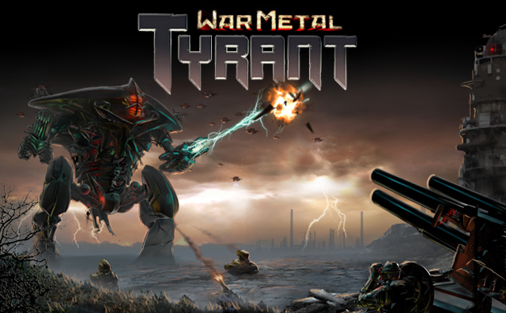

Tyrant
Tyrant is an MMO CCG with interactive battles and a storyline! Gather your Imperial forces to defend against a massive onslaught from the brutal Raiders, vile Bloodthirsty beasts, and the mysterious Xenos. Gather hundreds of cards and build a killer deck to take down other players in the Arena or band together to form a faction and fight your way to the top of the faction ladder!
I worked on Tyrant for the whole development cycle doing server side engine and gameplay programming in PHP. I still work on the project providing content updates for our 100k+ monthly user base. You can play Tyrant, for free, on Facebook at this link or on Kongregate at this link.
Tyrant has been very well received on both Facebook and Kongregate with over a 4.9/5.0 rating on Facebook (over 8k+ reviews,) and being the top rated game in Kongregate's MMO games category.